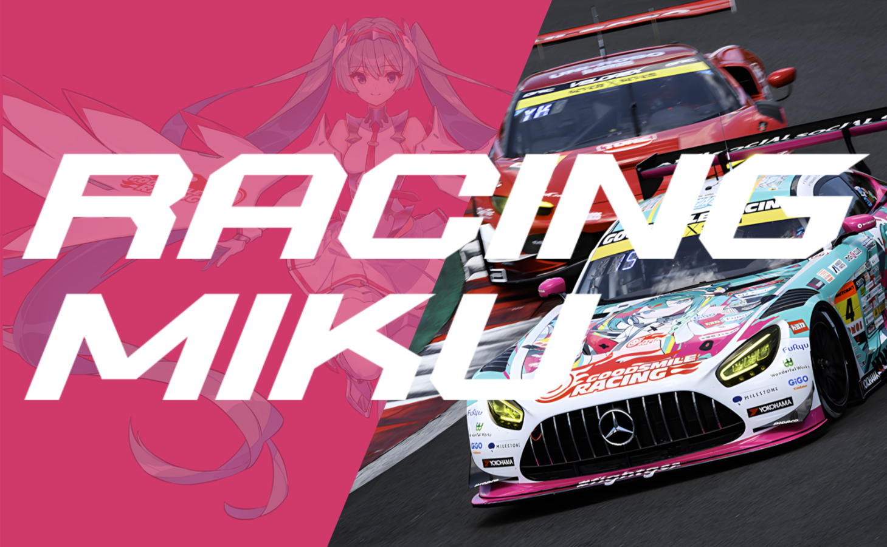
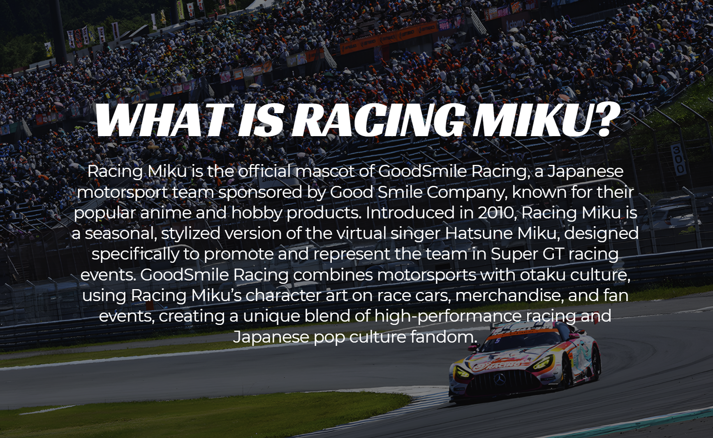
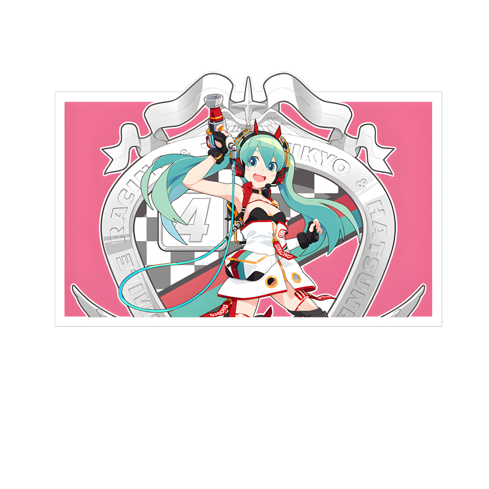

The challenging 2020 season, impacted by global events, saw Good Smile Racing's Mercedes-AMG GT3 sport a new Racing Miku design by LEN[A-7]. The team secured their first podium of the year with a 3rd place finish at Round 6 Suzuka, a significant achievement in an unusual season. Despite the difficulties, they managed to accumulate 21 points, concluding the season in 10th place in the driver standings.
